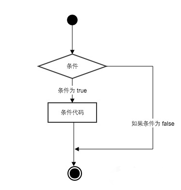
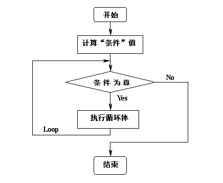

Python入门_1讲
关于本人培训之前需要注意的几点:
Python 里的基本概念
程序的注释
Python的编译器会忽略注释掉的文本,但是,作为文档,它对程序的阅读者是很有帮助的
基本的使用:
- 单行注释使用 #
- 多行注释使用 3个单引号或者3个双引号括 起来的一个字符串
标识符的拼写和命名惯例
- Python 对大小写敏感(区分大小写)
- 标识符由字母、数字和下划线组成
- 标识符必须是字母或下划线( _ )开头
- 不能以关键字(保留字)命名
Python里面的关键字:
1 | import keyword |
命名规范:
- 为什么使用命名规范
- 程序员们为了自己的代码能更容易的在同行之间交流，所以多采取统一的可读性比较好的命名方式
- 驼峰式命名法 / 下划线法
- 类名采用大驼峰式命名,即首字母需要大写
- 模块、变量、函数和方法名称可以凭自己喜好使用 驼峰式命名法 / 下划线法
- 当一个变量名是一个常量的时候所有字母大写
概念补充：
- 驼峰式命名： 骆驼式命名法就是当变量名或函数名是由一个或多个单词连结在一起，而构成的唯一识别字时，第一个单词以小写字母开始，从第二个单词开始以后的每个单词的首字母都采用大写字母，例如：myFirstName、myLastName，这样的变量名看上去就像骆驼峰一样此起彼伏
- 下划线命名法： 逻辑断点之间用下划线连接，字母全部小写，例如： my_firstname, my_lastname
行与缩进
Python使用缩进来表示代码块,而不是{},缩进的空格数是可变的，但是同一个代码块的语句必须包含相同的缩进空格数, 为了统一,一般使用4个空格来进行缩进
1 | # 标准 |
1 | # 非标准 |
1 | # 错误 |
数据类型
只介绍基本的数据类型:
| 数据类型 | 例子 |
|---|---|
| Number（数字) | int,long,float,complex |
| String（字符串) | “BNU” |
| List（列表) | [1,2,3],[1,2,3,[1,2,3],4] |
| Dictionary（字典) | {1:”nihao”,2:”hello”} |
| Tuple（元组) | (1,2,3,abc) |
| Bool（布尔) | True、False |
变量的声明: 因为在Python里面一切皆对象, 任何变量都可以指定为任何类型的一个值,所以不需要为该变量声明为某一个类型,这和很多其他语言中的情况不太一样, 但是请记住,所有的值和对象都是有类型的,而且类型错误一定会进行检查
一个简单的赋值操作:
1 | text = "Hello, Python" |
输出/输入
输出:
1 | print(text) |
输入:
1 | user_input = input(">>>:") |
逻辑判断
Python条件语句是通过一条或多条语句的执行结果（True或者False）来决定执行的代码块
用图来简单表示:

Python中if语句的一般形式如下所示：
1 | if condition_1: |
- 如果 “condition_1” 为 True 将执行 “statement_block_1” 块语句
- 如果 “condition_1” 为False，将判断 “condition_2”
- 如果”condition_2” 为 True 将执行 “statement_block_2” 块语句
- 如果 “condition_2” 为False，将执行”statement_block_3”块语句
注意:
- Python 中用 elif 代替了 else if，所以if语句的关键字为：if – elif – else
- 每个条件后面要使用冒号 :，表示接下来是满足条件后要执行的语句块
- 使用缩进来划分语句块，相同缩进数的语句在一起组成一个语句块
- 在Python中没有switch – case语句
1 | # 评级 |
牛刀小试: 猜数字游戏
操作中…
逻辑循环
Python中的循环语句有 for 和 while
注意: 切勿把程序写成死循环
while loop
简单的用流程图表示为:

基本句法:
1 | while 判断条件： |
1 | # 循环10次: |
1 | count = 0 |
for 语句
Python for循环可以遍历任何序列的项目，如一个列表或者一个字符串
for循环的一般格式如下：
1 | for <variable> in <sequence>: |
1 | # 打印10个数 |
关于 continu与break 用法:
需求一：还是上面的程序，但是遇到小于5的循环次数就不走了，直接跳入下一次循环
1 | for i in range(10): |
需求二：还是上面的程序，但是遇到大于5的循环次数就不走了，直接退出
1 | for i in range(10): |
牛刀大试
回到上面for 循环的例子，如何实现让用户不断的猜年龄，但用户最多只有3次猜的机会，再猜不对就退出程序